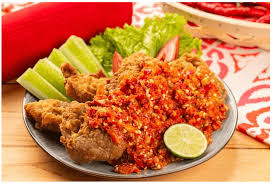

Smashed Fried Chicken with Sambal
or
Ayam Geprek

Ingredients
Ingredients for Ayam Geprek:
For the Fried Chicken:
- 500 grams chicken (thigh or breast, cut into pieces)
- 2 cloves garlic (mashed or finely grated)
- 1/2 tsp salt
- 1/4 tsp white pepper
- 1 egg
- 100 grams all-purpose flour
- 3 tbsp cornstarch (optional for extra crispiness)
- Cooking oil (for deep frying)
For the Sambal (Spicy Chili Sauce):
- 6-10 red bird's eye chilies (adjust to taste)
- 2 cloves garlic
- A pinch of salt
- 1/2 tsp sugar
- 2 tbsp hot cooking oil (from frying the chicken)
Instructions:
- Marinate the Chicken:
- Rub the chicken with garlic, salt, and pepper.
- Let it rest for 15-30 minutes.
- Prepare the Breading:
- Beat the egg in one bowl.
- In a separate bowl, mix flour and cornstarch.
- Coat and Fry the Chicken:
- Dip the marinated chicken into the egg, then coat it well with the flur mixture.
- For extra crunch, you can double dip: egg → flour → egg → flour again.
- Deep fry the chicken in hot oil until golden brown and crispy.
- Remove and drain on paper towels.
- Make the Sambal:
- In a mortar and pestle, grind the chilies, garlic, salt, and sugar until crushed but not too smooth.
- Pour hot oil over the sambal to cook and release aroma.
- Smash the Chicken:
- Place the fried chicken on the mortar with sambal.
- Lightly smash the chicken using the pestle until it breaks apart and mixes with the sambal.
Serving Suggestions:
Serve hot with steamed rice, fresh cucumbers, and maybe fried tempeh or tofu on the side.